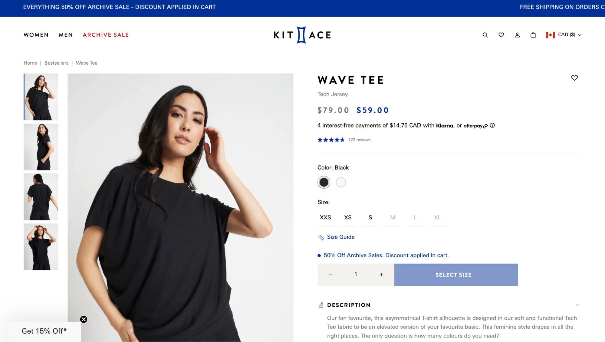

Introduction
In this lesson, you will figure out how the role of an image affects the way alt text should be written.
You will not start with a full rule. Instead, you will compare examples, notice what changes, test a pattern, and then apply that pattern to new images.
What to pay attention to
- What is the image doing on the page?
- Does it add meaning, only add style, trigger an action, or contain a lot of information?
- When the image role changes, should the alt text stay the same or change?
Before You Compare Examples
You only need four role labels for this lesson. Do not memorize them yet. Just use them as a way to think about what the image is doing.
Informative
The image adds meaning or useful information.
Decorative
The image only adds visual style and does not add meaning.
Functional
The image acts like a control, button, or link.
Complex
The image contains a lot of information, like a chart, graph, or diagram.
Example Set 1
Compare these two examples. Look for what changed about the image’s role, then notice how the alt text changed too.


What changed?
In the first example, the image helps communicate meaning, so the alt text should communicate that meaning. In the second example, the image is only visual decoration, so it should use empty alt text.
Example Set 2
Compare these two examples too. This time, notice that one image triggers an action and the other has too much information to describe detail by detail.

What changed?
A functional image should tell the user what action or purpose it has. A complex image should summarize the main point instead of listing every visible detail.
Track the Pattern
Match each image role to the alt text behavior that best fits it.
State the Rule in Your Own Words
Based on the examples, what pattern connects image role and alt text?
Check 1: Informative Image
Context: Photo used in an article.
Check 2: Decorative Image

Context: Small graphic beside a heading.
Check 3: Functional Image
Context: Icon in a site header.
Check 4: Complex Image

Context: Chart of revenue over time.
Apply the Pattern
Practice 1

Context: Chart used in a report.
Practice 2
Context: Photo used in a presentation.
Final Challenge

Context: Product page screenshot. Focus on the bag icon in the top navigation.
Lesson Complete
You have reached the end of the lesson.
When the role of an image changes, the alt text behavior should change too.
Informative
Describe the meaning.
Decorative
Use empty alt text.
Functional
Describe the action or purpose.
Complex
Summarize the main point.